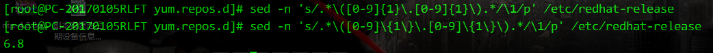
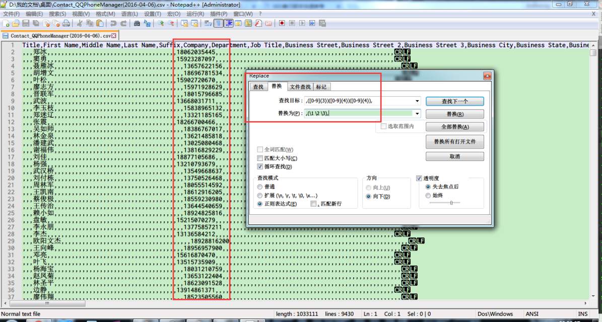
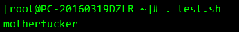
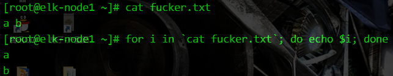

导航
杂项
动态变量https://www.cnblogs.com/bugutian/p/12030428.html
https://blog.csdn.net/qinyushuang/article/details/44115531
用到eval, 来将变量获得的字符串(变量名称), 作为运算对象
实例
for item_name in Manufacturer Product_Name Version Serial_Number UUID SKU_Number Family
do
tmp=$(eval echo '$'${item_name})
printf "| %-14s | %-60s |\n" "$item_name" "${tmp}"
done
printf " %s \n" "${table_header}"
tmp变量 的取值是 "Manufacturer Product_Name ..."中的一个
那么echo '$'${item_name}的输出就是形如$Manufacturer
再通过eval 命令将其当作运算对象执行, 就可以得到相应变量存储的值
需要注意的是, eval 这种命令也有存在SQL注入漏洞的不当使用的风险, 需要限制其的运行条件
Shell正则
关于正则表达式分组及后向引用http://wiki.jikexueyuan.com/project/unix/regular-expressions.html
http://www.cnblogs.com/jcli/p/4088514.html
http://kodango.com/sed-and-awk-notes-part-3
| 字符 | 描述 |
|---|---|
| ^ | 匹配一行的起始 |
| $ | 匹配一行的结尾 |
| . | 匹配任何的单个字符 |
| * | 匹配零个或多个以前出现的字符 |
| [chars] | 为了匹配任何字符串的字符。您可以使用-字符来表示字符的范围。 |
| 表达式 | 描述 |
|---|---|
| /a.c/ | 匹配包含字符串如a+c，a-c，abc, match, 还有 a3c |
| /a*c/ | 匹配相同的字符串还有字符串比如ace，yacc，以及arctic |
| /[tT]he/ | 匹配字符The和the |
| /^$/ | 匹配空白行 |
| /^.*$/ | 不管任何情况，都匹配一整行 |
| / */ | 匹配一个或多个空格 |
| /^$/ | 匹配空行 |
| 集 | 描述 |
|---|---|
| [a-z] | 匹配一个小写字母 |
| [A-Z] | 匹配一个大写字母 |
| [a-zA-Z] | 匹配一个字母 |
| [0-9] | 匹配数字 |
| [a-zA-Z0-9] | 匹配单个字母或数字 |
一个实例:
为了取/etc/redhat-release中的版本号,在描述数字0-9出现的次数 {1} ,花括号和小括号需要用到转义符

awk来实现正则表达式取不匹配
grep -v 在多个关键字时总不太灵光
awk可以这样用
awk '!/关键字1 | 关键字2/{print}'
! 一定要配合单引号'',否则报错
sed正则表达式匹配,各种括号的转义和不转义
http://blog.csdn.net/zl87758539/article/details/77481679
[ ] 需要匹配的时候，需要转义(这个是叛徒)
echo "[ ]"|sed 's/\[.*\]/aaa/g'
( ) 需要匹配的时候，不要转义
$echo "( )"|sed 's/( )/c/g'
{ } 需要匹配的时候，不要转义
$echo "{ }"|sed 's/{ }/c/g'
当需要匹配数字，字母等使用中括号时候：
不要转义
但使用大括号作为特殊字符时候，需要转义。
$echo "333"|sed 's/[0-9]\{3\}/ccc/g'
当需要适配符，需要使用\1来替换正则表达式的对应参数时：
不能写(regrexxxx)
要写(regrexxxx) $echo "{1234567}"|sed 's/{([0-9])}/\1/g' 与此对应的还有 +和
在做为特别字符时候+必须转义为
+
1
才有效，
而*则不需要。
举个例子：
echo "ccc"| sed 's/c*/aaa/g' #正确
echo "ccc"| sed 's/c\*/aaa/g' #错误
echo "ccc"| sed 's/c+/aaa/g' #错误
echo "ccc"| sed 's/c\+/aaa/g' #正确
grep中正则表达式的细节
- 在grep和sed中，\t和\s都是无效的，要表示制表符和空格，只能直接敲入tab和空格键，这个在shell脚本中还好说，在命令行模式下就比较麻烦了，因为tab默认是会智能补全命令的，所以要在按tab之前按下ctrl+v ，就可以把tab打出来了。
- egrep和grep -E是等效的，egrep相比grep对正则表达式有了一些扩展支持，具体包括一下几点（其实这些特性grep是可以用的，只不过要在元字符前面加上转义符，比如用到+时，应敲入+）：
+：匹配一个或多个先前的字符。如：’[a-z]+able’，匹配一个或多个小写字母后跟able的串，如loveable,enable,disable等。
?：匹配零个或多个先前的字符。如：’gr?p’匹配gr后跟一个或没有字符，然后是p的行。
a|b|c :匹配a或b或c。如：grep|sed匹配grep或sed
():分组符号，如：love(able|rs)ov+匹配loveable或lovers，匹配一个或多个v。
x{m},x{m,},x{m,n}:作用同x{m},x{m,},x{m,n} - grep还支持一些POSIX字符类，也一并记录如下吧，虽然平时应该不大可能用到：
| POSIX字符 | 含义 |
|---|---|
| [:alnum:] | 文字数字字符 |
| [:alpha:] | 文字字符 |
| [:digit:] | 数字字符 |
| [:graph:] | 非空字符（非空格、控制字符） |
| [:lower:] | 小写字符 |
| [:cntrl:] | 控制字符 |
| [:print:] | 非空字符（包括空格） |
| [:punct:] | 标点符号 |
| [:space:] | 所有空白字符（新行，空格，制表符） |
| [:upper:] | 大写字符 |
| [:xdigit:] | 十六进制数字（0-9，a-f，A-F） |
Shell里的细节
http://blog.csdn.net/yorkingalan/article/details/7055518
http://mprc.pku.edu.cn/mentors/training/TrainingCourses/material/ShellProgramming.HTM
http://lq2419.blog.51cto.com/1365130/1238880
调试执行
bash -x 脚本名
xargs引用管道前的结果
find . -name "*" | xargs -i cp {} /home/users/
在shell脚本中导入外部函数
https://blog.csdn.net/xiemeikj/article/details/5521067
. scripts_name
source scripts_name
以上两种方式都能调用在其他脚本中定义的函数
shell脚本获取自身所在路径和名字
https://xvcat.com/post/1096
https://aimuke.github.io/linux/2019/04/29/how-to-get-abusolute-path/
$(cd `dirname $0`; pwd)/$0
命令执行结果赋值给变量
形如：
head -c 100 /dev/urandom | tr -dc A-Z | head -c 4
生成4个随机大写字母，结果想赋值给变量，在shell中如何表示？
$(head -c 100 /dev/urandom | tr -dc A-Z | head -c 4)
shell四则运算
http://www.cnblogs.com/chengmo/archive/2010/09/30/1839556.html
做除法用存变量的形式还是比较好使
var=$(echo "$numerator/$denominator"|bc)
shell去重的几种方法
- 使用uniq/sort删除重复行
注意：单纯uniq是不行的。
sort -k2n file | uniq > a.out
当file中的重复行不再一起的时候，uniq没法删除所有的重复行。经过排序后，所有相同的行都在相邻，因此uniq可以正常删除重复行。 - 使用用sort+awk命令
注意：单纯awk同样不行，原因同上。
sort -k2n file | awk '{if ($0!=line) print;line=$0}'
也可以使用 awk '!i[$1]++' log; - 用sort+sed命令，同样需要sort命令先排序。
sort -k2n file | sed '$!N; /^(.*)\n\1$/!P; D'
if条件判断之组合判断（与、或、非）
https://blog.51cto.com/dngood/675325
在使用与 或 非条件判断时出现
[: : integer expression expected
并且-a -o 的写法与中括号 [ ] 里面的格式都正确时
解决办法:
- 所有字符 与逻辑运算符直接用“空格”分开，不能连到一起。
- [[]] 运算符只是[]运算符的扩充。能够支持<,>符号运算不需要转义符，它还是以字符串比较大小。里面支持逻辑运算符：|| &&
http://wuyelan.blog.51cto.com/6118147/1530277
组合条件测试是指可以将多个条件组合起来进行判断，条件和条件之间有逻辑关系。例如判断一个数是否大于3，并且小于9，这里大于3是一个条件，小于9也是一个条件，这两个条件必须同时满足。同时满足即为逻辑关系。通常逻辑关系有以下几种：
与：-a，当指定多个条件时，默认为与关系
或：-o
非：!，这是个单目操作符
示例
#!/bin/bash
if [ $1 =="memory" -o $1 == "Memory" ]; then
#### 这里不再使用模式匹配了，而采用-o或关系来进行组合条件判断
free -m
else
cat /proc/uptime
fi
上面的逻辑关系，是针对条件组合的情况，两个或多个命令的运行结果也可以组合判断，其逻辑关系有如下几种：
&&: 与
||：或
!: 非
重定向1>/dev/null 2>&1 含义
http://blog.csdn.net/ithomer/article/details/9288353
/dev/null ：代表空设备文件
> ：代表重定向到哪里，例如：echo "123" > /home/123.txt
1 ：表示stdout标准输出，系统默认值是1，所以">/dev/null"等同于"1>/dev/null"
2 ：表示stderr标准错误
& ：表示等同于的意思，2>&1，表示2的输出重定向等同于1
1 > /dev/null 2>&1 语句含义：1 > /dev/null 首先表示标准输出重定向到空设备文件，也就是不输出任何信息到终端，说白了就是不显示任何信息。2>&1 接着，标准错误输出重定向（等同于）标准输出，因为之前标准输出已经重定向到了空设备文件，所以标准错误输出也重定向到空设备文件。
cmd >a 2>a 和 cmd >a 2>&1 为什么不同？
cmd >a 2>a ：stdout和stderr都直接送往文件 a ，a文件会被打开两遍，由此导致stdout和stderr互相覆盖。
cmd >a 2>&1 ：stdout直接送往文件a ，stderr是继承了FD1的管道之后，再被送往文件a 。a文件只被打开一遍，就是FD1将其打开。
Linux下批量复制文件到多个文件夹
http://blog.sina.com.cn/s/blog_45e860c10100ni1a.html
mkdir建以1,2,3,4,5个文件夹名
把所有ini后缀的文件拷贝到12345文件夹得集合F中,命令如下
for F in 1 2 3 4 5 ;do cp *.ini $F ;done
想要每步骤都显示出来,在cp后面加上-vf
for F in 1 2 3 4 5;do cp -vf *.ini $F ;done
正则表达式的标签分组，后向引用的细节
http://wiki.jikexueyuan.com/project/unix/regular-expressions.html
对字符串分组拆分，并后向的引用，用一对小括号 () 来划分一个分组
notepad++的实现：

Shell中的实现（难点在于转移符 \ 的使用，分组标签 () 要用 \ 转义，以及出现次数 {} 也要用 \ 转移，）：

Shell里单双括号运算的解释
单括号运算符号：
a=$(date)
等同于
a=`date`
双括号运算符:
a=$((1+2))
等同于：
a=`expr 1 + 2`
指定范围的随机数生成
获取F范围【1-F】内的随机数
echo $((RANDOM%F+1))
例：获取50范围【1-50】的随机数 echo $((RANDOM%50+1))
grep -q 用于if 逻辑判断
-q 参数，本意是 Quiet; do not write anything to standard output. Exit immediately with zero status if any match is found, even if an error was detected. 中文意思为，安静模式，不打印任何标准输出。如果有匹配的内容则立即返回状态值0。
例：
#### cat a.txt
nihao
nihaooo
hello
#### if grep -q hello a.txt ; then echo yes;else echo no; fi
yes
#### if grep -q word a.txt; then echo yes; else echo no; fi
no
grep通过以下参数控制上下文
grep -C 5 foo file 显示file文件中匹配foo字串那行以及上下5行
grep -B 5 foo file 显示foo及前5行
grep -A 5 foo file 显示foo及后5行
对时间的计算
date +%s -d '各种时间格式'
将给定的时间格式转换成时间戳
时间加减
这里处理方法，是将基础的时间转变为时间戳，然后，需要增加或者改变时间，变成 秒。
如：1990-01-01 01:01:01 加上 1小时 20分
处理步骤：
将基础时间转为时间戳
time1=$(date +%s -d '1990-01-01 01:01:01')
echo $time1
631126861 【时间戳】
将增加时间变成秒
[root@localhost ~]#### time2=$((1*60*60+20*60))
[root@localhost ~]#### echo $time2
4800
两个时间相加，计算出结果时间 time1=$(($time1+$time2)) time1=$(date +%Y-%m-%d\ %H:%M:%S -d "1970-01-01 UTC $time1 seconds"); echo $time1 1990-01-01 02:21:01
时间差计算方法
如：2010-01-01 与 2009-01-01 11:11:11 时间差
原理：同样转成时间戳，然后计算天，时，分，秒
time1=$(($(date +%s -d '2010-01-01') - $(date +%s -d '2009-01-01 11:11:11')));
echo time1
将time1 / 60 秒，就变成分了。
时间戳反转年月日时分秒
date -d @时间戳 "+%Y-%m-%d %T"
break和continue的准确用法
http://c.biancheng.net/cpp/view/7010.html
比较运算
http://blog.csdn.net/yf210yf/article/details/9207147
1.整数比较
-eq 等于,如:if [ "$a" -eq "$b" ]
-ne 不等于,如:if [ "$a" -ne "$b" ]
-gt 大于,如:if [ "$a" -gt "$b" ]
-ge 大于等于,如:if [ "$a" -ge "$b" ]
-lt 小于,如:if [ "$a" -lt "$b" ]
-le 小于等于,如:if [ "$a" -le "$b" ]
< 小于(需要双括号),如:(("$a" < "$b"))
<= 小于等于(需要双括号),如:(("$a" <= "$b"))
> 大于(需要双括号),如:(("$a" > "$b"))
>= 大于等于(需要双括号),如:(("$a" >= "$b"))
小数比较使用AWK
2.字符串比较
= 等于,如:if [ "$a" = "$b" ]
== 等于,如:if [ "$a" == "$b" ],与=等价
注意, 比较两个字符串是否相等的办法是：
if [ "$test"x = "test"x ]; then
这里的关键有几点：
1 使用单个等号
2 注意到等号两边各有一个空格：这是unix shell的要求
3 注意到"$test"x最后的x，这是特意安排的，因为当$test为空的时候，上面的表达式就变成了x = testx，显然是不相等的。而如果没有这个x，表达式就会报错：[: =: unary operator expected
注意:==的功能在[[]]和[]中的行为是不同的,如下:
[[ $a == z ]] #### 如果$a以"z"开头(模式匹配)那么将为true
[[ $a == "z" ]] #### 如果$a等于z*(字符匹配),那么结果为true
[ $a == z ] #### File globbing 和word splitting将会发生
[ "$a" == "z" ] #### 如果$a等于z*(字符匹配),那么结果为true
获取字符串变量的一部分
echo ${variable:x:y}
x - 起始位置
y - 长度
例子:

在shell中计算浮点数的处理
bash 不支持浮点运算，如果需要进行浮点运算，需要借助bc,awk 处理
1、借助bc处理示例：计算5.01-4*2.0，得到的结果为-2.99
$ c=$(echo "5.01-4*2.0"|bc)
$ echo $c
2、借助awk处理示例：计算7.01*5-4.01，得到的结果为31.05
$ c=$(awk 'BEGIN{print 7.01*5-4.01 }')
$ echo $c
注：在shell 中$() 与 ``等效。 中间包含命令语句执行，返回执行结果。
在shell中创建字典
declare -A dic
dic=([cms]="192.168.0.2" [api]="192.168.0.3" [web]="192.168.0.4")
http://blog.csdn.net/jeremy_yangt/article/details/49100773
#必须先声明
declare -A dic
dic=([key1]="value1" [key2]="value2" [key3]="value3")
#打印指定key的value
echo ${dic["key1"]}
#打印所有key值
echo ${!dic[*]}
#打印所有value
echo ${dic[*]}
#遍历key值
for key in $(echo ${!dic[*]})
do
echo "$key : ${dic[$key]}"
done
echo "shell定义数组"
#数组
list=("value1" "value2" "value3")
#打印指定下标
echo ${list[1]}
#打印所有下标
echo ${!list[*]}
#打印数组下标
echo ${list[*]}
#数组增加一个元素
list=("${list[@]}" "value3")
for循环遇到空格切分换行的问题解决
https://blog.csdn.net/m0_37549859/article/details/78238062
重定义换行符可以解决, shell的内置变量$IFS
OLDIFS=$IFS
IFS=$'\n'
中间代码块
IFS=$OLDIFS
for ... in ...和 while read ...之间的区别
http://blog.itpub.net/22664653/viewspace-1175858/
真正导致for ... in ... 和while read ...区别在于shell中变量存储多行数据的形式
在shell中输入多行变量,换行符并没有以\n形式存储,虽然显示的是多行,但实际上数据还是一行.
如果你在变量中输入换行符\n,那么echo要能使换行符起作用,则需要使用-e参数,否则还是\n文本形式.
所以 while read ...一次性读完了他演示的例子的数据,因为本来就只有一行
而 for ... in ... 之所以进行了换行,那是因为遇到空格进行的切分的
图示说明

所以,结论就是,如果读文件,for...in...和while read ...并没有什么区别.
变量存储就会有区别.
简单就是最好的原则,尽量从文件中读取.
shell中处理换行符\n
在文本解析中,需要替换换行符的场景比较常见
但非贪婪模式,如 .*? 在sed中并不好使
受下面帖子的启发
http://blog.xg98.com/article.asp?id=549
http://bbs.chinaunix.net/thread-3745188-1-1.html
https://segmentfault.com/q/1010000002416121
总结目前一个可行的流程
1) tr命令 对\n做无脑替换,需注意tr是1对1替换,举例 tr 'abc' '123' ,那么它执行的是a变1,b变2,c变3
2) sed 去找标志位,在标志位后加一些原文本绝不会出现的词组----是为第3步作准备
3) awk 利用它的输入 / 输出 行 / 列符重定义的功能,将第2步加的词组作为行结束标志,替换回\n,因为是额外添加的,则这些是可以牺牲的,在awk作行分割时被替换掉也不会影响原文.
Shell比较运算符
https://blog.csdn.net/ithomer/article/details/6836382常用的运算符
| 运算符 | 描述 | 示例 |
|---|---|---|
| 文件比较运算符 | ||
| -e filename | 如果 filename 存在，则为真 | [ -e /var/log/syslog ] |
| -d filename | 如果 filename 为目录，则为真 | [ -d /tmp/mydir ] |
| -f filename | 如果 filename 为常规文件，则为真 | [ -f /usr/bin/grep ] |
| -L filename | 如果 filename 为符号链接，则为真 | [ -L /usr/bin/grep ] |
| -r filename | 如果 filename 可读，则为真 | [ -r /var/log/syslog ] |
| -w filename | 如果 filename 可写，则为真 | [ -w /var/mytmp.txt ] |
| -x filename | 如果 filename 可执行，则为真 | [ -L /usr/bin/grep ] |
| filename1 -nt filename2 | 如果 filename1 比 filename2 新，则为真 | [ /tmp/install/etc/services -nt /etc/services ] |
| filename1 -ot filename2 | 如果 filename1 比 filename2 旧，则为真 | [ /boot/bzImage -ot arch/i386/boot/bzImage ] |
| 字符串比较运算符 （请注意引号的使用，这是防止空格扰乱代码的好方法） | ||
| -z string | 如果 string 长度为零，则为真 | [ -z "$myvar" ] |
| -n string | 如果 string 长度非零，则为真 | [ -n "$myvar" ] |
| string1 = string2 | 如果 string1 与 string2 相同，则为真 | [ "$myvar" = "one two three" ] |
| string1 != string2 | 如果 string1 与 string2 不同，则为真 | [ "$myvar" != "one two three" ] |
| 算术比较运算符 | ||
| num1 -eq num2 | 等于 | [ 3 -eq $mynum ] |
| num1 -ne num2 | 不等于 | [ 3 -ne $mynum ] |
| num1 -lt num2 | 小于 | [ 3 -lt $mynum ] |
| num1 -le num2 | 小于或等于 | [ 3 -le $mynum ] |
| num1 -gt num2 | 大于 | [ 3 -gt $mynum ] |
| num1 -ge num2 | 大于或等于 | [ 3 -ge $mynum ] |
Shell输出的格式控制
颜色、闪烁等#!/bin/bash
####
#下面是字体输出颜色及终端格式控制
#字体色30-37
echo -e "\033[30m黑色字\033[0m"
echo -e "\033[31m红色字\033[0m"
echo -e "\033[32m绿色字\033[0m"
echo -e "\033[33m黄色字\033[0m"
echo -e "\033[34m蓝色字\033[0m"
echo -e "\033[35m紫色字\033[0m"
echo -e "\033[36m天蓝字\033[0m"
echo -e "\033[37m白色字\033[0m"
#字背景颜色范围:40-47
echo -e "\033[40;37m黑底白字\033[0m"
echo -e "\033[41;30m红底黑字\033[0m"
echo -e "\033[42;34m绿底蓝字\033[0m"
echo -e "\033[43;34m黄底蓝字\033[0m"
echo -e "\033[44;30m蓝底黑字\033[0m"
echo -e "\033[45;30m紫底黑字\033[0m"
echo -e "\033[46;30m天蓝底黑字\033[0m"
echo -e "\033[47;34m白底蓝字\033[0m"
#.....
#控制选项说明
#\033[0m关闭所有属性
#\033[1m设置高亮度
#\033[4m下划线
echo -e "\033[4;31m下划线红字\033[0m"
#闪烁
echo -e "\033[5;34m红字在闪烁\033[0m"
#反影
echo -e "\033[8m消隐\033[0m "
####
#\033[30m-\033[37m设置前景色
#\033[40m-\033[47m设置背景色
#\033[nA光标上移n行
#\033[nB光标下移n行
echo -e "\033[4A光标上移4行\033[0m"
#\033[nC光标右移n行
#\033[nD光标左移n行
#\033[y;xH设置光标位置
#\033[2J清屏
#\033[K清除从光标到行尾的内容
echo -e "\033[K清除光标到行尾的内容\033[0m"
#\033[s保存光标位置
#\033[u恢复光标位置
#\033[?25|隐藏光标
#\033[?25h显示光标
echo -e "\033[?25l隐藏光标\033[0m"
echo -e "\033[?25h显示光标\033[0m"
#下面的这个例子是字体不停的闪烁。
#!/bin/bash
####
a=30
b=41
while true
do
echo -e "\033[${a}m光辉女郎\033[0m"
echo -e "\033[${a}m的吗西亚\033[0m"
echo -e "\033[${a}m洛克萨斯\033[0m"
a=$(($(($a%7))+30))
b=$(($(($b%7))+40))
#每次让字体颜色在30-37转换
#每次让背景颜色在40-47转换
echo -e "\033[4A\033[0m"
done